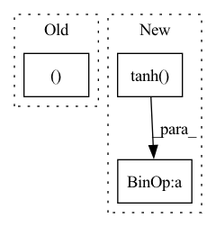

Pattern ID :41906

Before Change
@staticmethod
def _single_calc(fn_input, sequence_input, linear_param):
out = fn_input - fn_input.mean(dim=0, keepdim=True)
out0, out1 = torch.nn.functional.linear(torch.cat([out, sequence_input], 1),
linear_param,
None).chunk(2, 1)
return torch.sigmoid(out0) * out1.tanh()
After Change
out = fn_input - fn_input.mean(dim=0, keepdim=True)
features = out.size(1)
out = torch.mm(out, linear_param[:features]) + torch.mm(sequence_input, linear_param[features:])
return torch.nn.functional.relu6(out[:, :features]) * out[:, features:].tanh()
@staticmethod
def _calc(fn_input, sequence_input, linear_param, depth):
out = fn_input
In pattern: SUPERPATTERN
Frequency: 4
Non-data size: 3
Instances
Fragment ID: 117455459
Project Name: homebrewnlp/homebrewnlp
Commit Name: 2c4b92319ccca8f3a6f7c2677b9f0fbf88f7b8db
Time: 2020-08-05
Author: 39779310+ClashLuke@users.noreply.github.com
File Name: module.py
M Class Name: ReversibleRNNFunction
N Class Name: ReversibleRNNFunction
M Method Name: _single_calc(3)
N Method Name: _single_calc(3)
M Parent Class: torch.autograd.Function
N Parent Class: torch.autograd.Function
M File Name: module.py
N File Name: module.py
M Start Line: 8
M End Line: 12
N Start Line: 7
N End Line: 10
'>
Before Change
weight = torch.nn.functional.relu6(out1)
out0 = out0 * weight
print("C", out0.mean().item(), weight.mean().item())
return out0, weight + 1
@staticmethod
def _forward_pass(fn_input, sequence_input, linear_param0, linear_param1):
inp = fn_input.chunk(2, 1)
After Change
out0, out1 = torch.nn.functional.linear(torch.cat([out, sequence_input], 1),
linear_param,
None).chunk(2, 1)
return torch.nn.functional.relu6(out0) * out1.tanh()
@staticmethod
def _forward_pass(fn_input, sequence_input, linear_param0, linear_param1):
inp = fn_input.chunk(2, 1)
'>
Fragment ID: 117455460
Project Name: homebrewnlp/homebrewnlp
Commit Name: 50b0a36baa2c79ddc7d5f1fb6ef2e9d39988c1c4
Time: 2020-07-16
Author: 39779310+ClashLuke@users.noreply.github.com
File Name: module.py
M Class Name: ReversibleRNNFunction
N Class Name: ReversibleRNNFunction
M Method Name: _calc(3)
N Method Name: _calc(3)
M Parent Class: torch.autograd.Function
N Parent Class: torch.autograd.Function
M File Name: module.py
N File Name: module.py
M Start Line: 38
M End Line: 45
N Start Line: 38
N End Line: 42
'>
Before Change
embedding = self.dropout(self.embed(x))
conv_in = embedding.permute(0, 2, 1)
conv_out = self.conv(conv_in)
values, indices = conv_out.max(dim=-1)
conv_out = conv_out.permute(2, 0, 1)
rnn_out, _ = self.rnn(conv_out)
attention = (self.mask * rnn_out).mean(dim=0)
After Change
conv_out = self.conv(conv_in).permute(2, 0, 1)
rnn_out, _ = self.rnn(conv_out)
global_rnn_out = rnn_out.mean(dim=0)
attention = torch.tanh(
self.local2attn(rnn_out) + self.global2attn(global_rnn_out)
).permute(1, 0, 2)
alpha = F.softmax(attention.matmul(self.attn_scale), dim=-1)
rnn_out = rnn_out.permute(1, 0, 2)
memory = (alpha * rnn_out).sum(dim=1)
output = self.fc(memory).squeeze(1)
return output
'>
Fragment ID: 117455465
Project Name: jaketae/deep-malware-detection
Commit Name: e2f5ae102005c60e7e0db3dc31a8d9c23fce276b
Time: 2020-11-26
Author: jaesungtae@gmail.com
File Name: models.py
M Class Name: AttentionRCNN
N Class Name: AttentionRCNN
M Method Name: forward(2)
N Method Name: forward(2)
M Parent Class: nn.Module
N Parent Class: nn.Module
M File Name: models.py
N File Name: models.py
M Start Line: 186
M End Line: 194
N Start Line: 196
N End Line: 206
'>
Before Change
action = action.tanh()
return action, std
if __name__ == "__main__":
use_cuda = torch.cuda.is_available()
After Change
log_prob = m.log_prob(action_base)
log_prob.unsqueeze_(-1)
action = action_base.tanh()
// According to "Soft Actor-Critic" (Haarnoja et. al) Appendix C
action_bound_compensation = torch.log(1. - action.tanh().pow(2) + 1e-6)
action_bound_compensation = action_bound_compensation.sum(dim=-1, keepdim=True)
log_prob.sub_(action_bound_compensation)
'>
Fragment ID: 117455469
Project Name: tmdt-buw/karolos
Commit Name: e8ce439013ace3e3e9647de55ed22ddf38f35396
Time: 2020-04-23
Author: scheiderer@uni-wuppertal.de
File Name: agents/nnfactory/sac.py
M Class Name: Policy
N Class Name: Policy
M Method Name: forward(3)
N Method Name: forward(3)
M Parent Class: nn.Module
N Parent Class: nn.Module
M File Name: agents/nnfactory/sac.py
N File Name: agents/nnfactory/sac.py
M Start Line: 103
M End Line: 115
N Start Line: 104
N End Line: 123